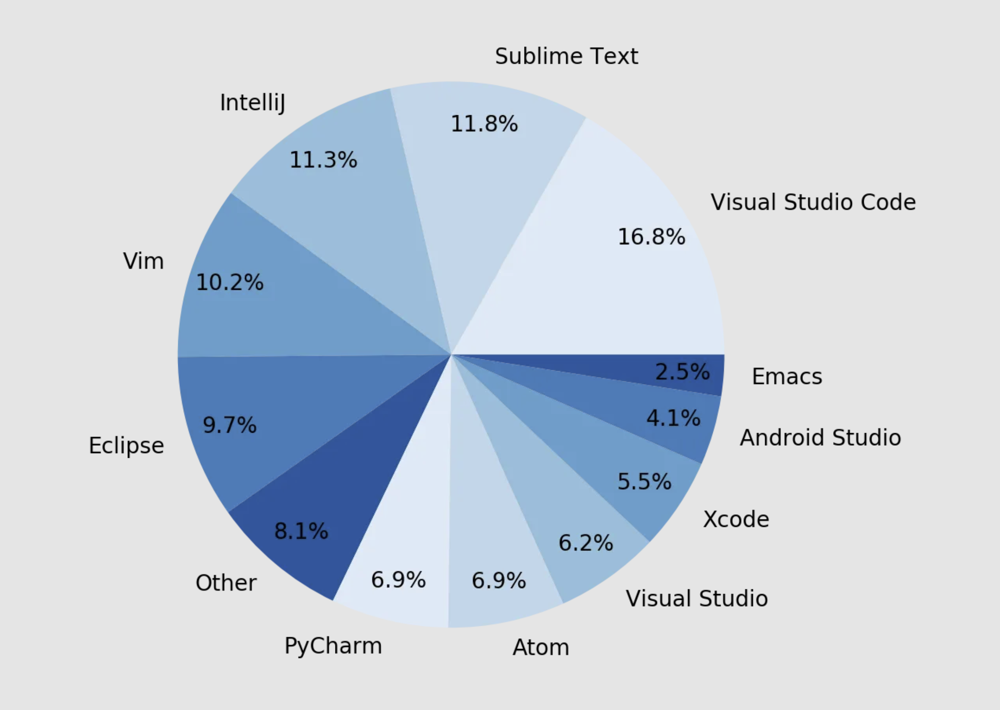
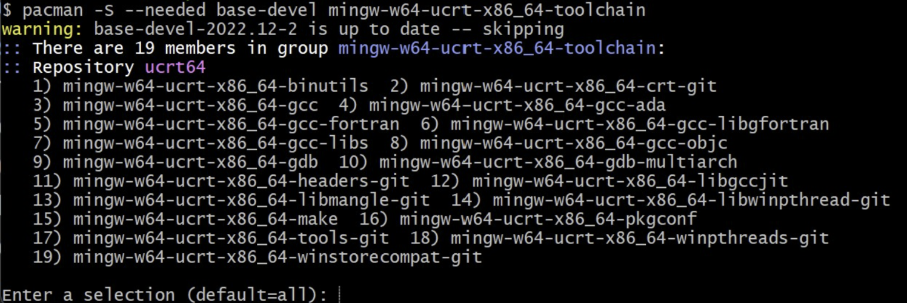
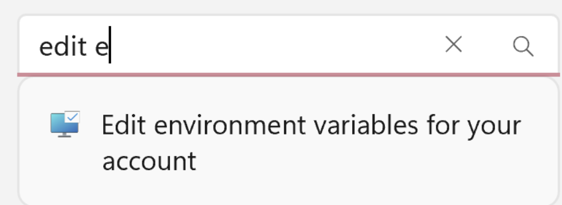
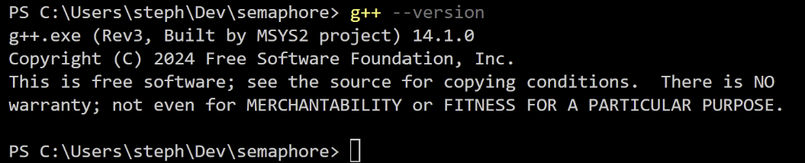
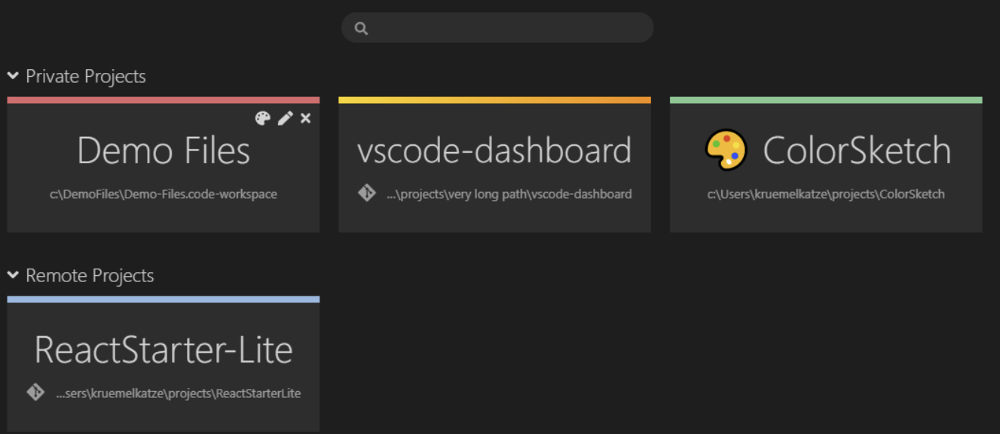
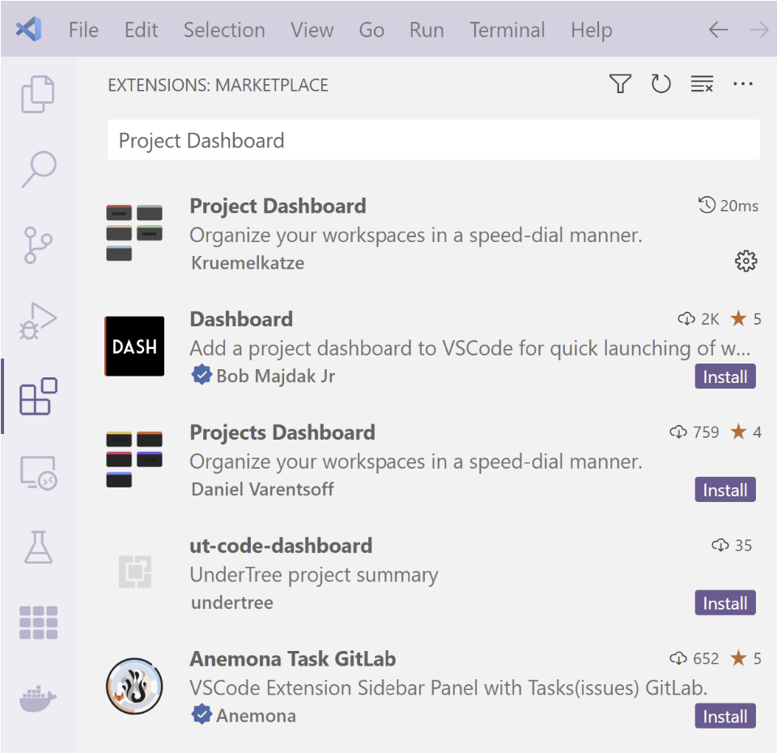

Introduction
As the world continues to adapt with better technology driven applications, students will have access to more practical tools. By learning these tools early, students will have an easier time collaborating, learning, and programming. Visual Studio Code is an application that supports many of the most common programming languages, all in one application. The caveat to this is the necessity of a compiler, which must be installed outside of Visual Studio Code. This process can be confusing, so this tutorial seeks to accurately explain the steps needed to install Visual Studio Code itself, the C++ Extension, and a compatible C++ Compiler for the platform. Through this tutorial, the user will need to have basic coding knowledge, ability to follow an algorithm, and a lot of patience. This tutorial intends to solve the issue of the complicated, and slightly unclear, process to be able to program in and compile C++ in Visual Studio Code. After these instructions, the user should be able to successfully install Visual Studio Code, the C++ Extension, a compatible C++ Compiler, and run a small C++ program to demonstrate.
Installing Visual Studio Code

Background
Visual Studio Code (VS Code) is a popular, lightweight, and open-source integrated development environment (IDE). In an article originally written and published on Triplebyte.com, and since moved to Medium.com, Charlie Treichler found that 16.8 percent of candidates interviewing at Triplebyte used Visual Studio Code.
VS Code is a rising technology in the tech industry, and it's wide range of capabilities including debugging tools, an integrated terminal, and version control integration, makes it an attractive candidate for any coder's IDE.
Instructions
The installation of VS Code is as easy as clicking a button. The link provided goes to the download page for visual studio code where all you need to do is select the appropriate version for your computer and then run through the installation pop ups. You don't need to change any of the default settings for this tutorial.
Installing C++ Compiler
Background
C++ is a compiled language, meaning your program's source code must be translated into machine code (compiled) before it can be run on your computer. The C/C++ extension that we will walk you through installing later on in the tutorial doesn't include a C++ compiler or debugger, since VS Code as an editor relies on command-line tools for the development workflow. You need to install these tools or use the tools already installed on your computer.
Instructions
Check Computer for Compiler
To check if you already have them installed:
- Open a new VS Code terminal window.
-
Use the following command to check for the GCC compiler:
gcc --version g++ --version gdb --version
If no details are shown when running these command then you do not have a C++ compiler accessible to VS Code and can proceed to the next step.
Install Compiler
In this tutorial, we teach you how to install a MinGW compiler. Mingw-w64 was created to support the GCC compiler on Windows systems.
- You can download the latest installer from the MSYS2 page or use this direct link to the installer.
- Run the installer and follow the steps of the installation wizard. Note that MSYS2 requires 64 bit Windows 8.1 or newer.
- In the wizard, choose your desired Installation Folder. Record this directory for later. In most cases, the recommended directory is acceptable. The same applies when you get to setting the start menu shortcuts step.
- When complete, ensure the Run MSYS2 now box is checked and select Finish. This will open a MSYS2 terminal window for you
-
In this terminal, install the MinGW-w64 toolchain by running the
following command:
pacman -S --needed base-devel mingw-w64-ucrt-x86_64-toolchain - Accept the default number of packages in the toolchain group by pressing Enter 
- Enter Y when prompted whether to proceed with the installation
-
Add the path of your MinGW-w64 bin folder to the Windows PATH
environment variable by using the following steps:
- In the Windows search bar, type Settings to open your Windows Settings.
- Search for Edit environment variables for your account. 
- In your User variables, select the Path variable and then select Edit.
- Select New and add the MinGW-w64 destination folder you recorded during the installation process to the list. If you used the default settings above, then this will be the path: C:\msys64\ucrt64\bin.
- Select OK, and then select OK again in the Environment Variables window to update the PATH environment variable. You have to reopen any console windows for the updated PATH environment variable to be available.
-
Check that your compiler has installed:
- Close the terminal you have open in VS Code.
- Close out of VS Code.
-
Relaunch VS Code and open a new terminal and type:
gcc --version g++ --version gdb --version

Optional: Organizing Development Files
Creating a Development Folder
Purpose
Creating a specific folder on your computer for coding projects will make it easier for you to remember where your coding projects are stored. Rather than having your projects scattered around multiple directories, everything that you might open in VS Code is in one place. This is not a necessary step, and you may skip this step if you already have a place on your computer where you store your code.
Instructions
Create a folder called 'DEV' or 'Development' somewhere easy to access on your computer. We recommend nestling it in the same folder that your machine automatically creates the 'documents' and 'downloads' folders since the development folder would be of similar relevance and it will be easy for you to find later.
Using Project Dashboard Extension
Purpose
VS Code Project Dashboard is a Visual Studio Code extension that lets you organize your projects using a graphical user interface built into VS Code. Projects are separated into groups and can be assigned a color.
For new users who may forget where their files are stored or are unsure if they connected a project to a GitHub, the project dashboard extension provides a visual reminder. The different colors for different projects, collapsible folders, and the git icon that is displayed when you have connected a project to a GitHub repository are all intuitive and easy for new users to understand.
Instructions
- Open VS Code.
- On the left hand side of the window there is a side menu with icons. Click on the one that is made up of four squares with one square in the top right corner being apart from the rest. This icon will bring you to the Extensions Marketplace.
- In the search bar of the Marketplace type in 'Project Dashboard'. The recommended version should be the first to pop up, created by Kruemelkatze. 
- Click on the extension. This will open a window to the side with more information about the extension.
- Click install. Another icon should appear on the left-hand side of your screen, that is a six-by-six square of tiles. This is the icon you will click to access your project dashboard.
Installing C++ Extension
After installing Visual Studio Code and a compatible C++ Compiler, the next step is to install a C++ Extension within Visual Studio Code.
- Start by navigating to the top left corner of the application, on the left wall of the screen will be some icons beneath the top ribbon. Look for the icon that is three squares with an additional one detached. It should look like this.
- After locating the icon, click on it. This should take you to the Extensions Search bar. From here, click into the search bar and type “C++”. This should bring up several results. The one we are looking for is called “C/C++”. If it is not the first result in the search, scroll through the list of extensions until you find the extension. It should look like the image below.
- After finding the extension, click on the blue “Install” button below the description of the extension.
- After it installs, you can check for it within your extension list by clearing the search bar. Under the bar, the installed section will be visible. If you have any additional installations within Visual Studio Code, they will be visible here.


Running Simple C++ Program
To begin coding in C++, first, you will need to create a new folder for your C++ project. You can do this by following the steps below: navigating to where you want this folder in your file explorer, creating the folder (for example simple_c++_program), and then opening this folder in Visual Studio Code.
- From your file explorer, navigate to where you want your project folder to be,
- Create a folder (for example simple_c++_program)
-
Open the folder in VS Code:
- In VS Code navigate to the file tab on the top banner.
- From the file tab click Open Folder. this will open a file explorer window where you can navigate to the folder you just created.
Now that you are in your project folder you can create a C++ file and start coding! To create your C++ file:
- Find the new file button
- Click on the 'new file' button and name the file. Be sure to add '.cpp' to the name to ensure that it is a C++ file.

After it should look something like this:

Once you set up your file, you are free to begin coding! Here is a sample of code to test that the compiler works.
#include
using namespace std;
int main()
{
int a, b, c;
cout << "Enter an integer a: ";
cin >> a;
cout << "Enter an integer to multiply with a: ";
cin >> b;
//this should print 11*b
cout << "a * b is: " << a*b << endl;
cout << "Enter another integer: ";
cin >> c;
//this should print b*c + 11
cout << "b * c + a is: " << b*c + a << endl;
return 0;
}
Next, to run the code to test it:
- Click on the small triangle in the top right corner and open the drop down.
- Select “Run C/C++ File”
At the bottom of the Terminal will output the first cout line and prompt the user to enter an integer.

Enter an integer and follow the chain until the program concludes.

From here, you can modify this C++ file as you please, or you can create a new project.
To reset or stop the current instance of the program, click the respective symbol at the top of the screen.

Conclusion
You have successfully learned how to set up Visual Studio Code for C++ programming by installing the software itself, a compatible C++ compiler, and the necessary C++ extension. These steps enable you to use Visual Studio Code as a versatile environment for writing and compiling C++ programs, providing flexibility and functionality for your coding projects.